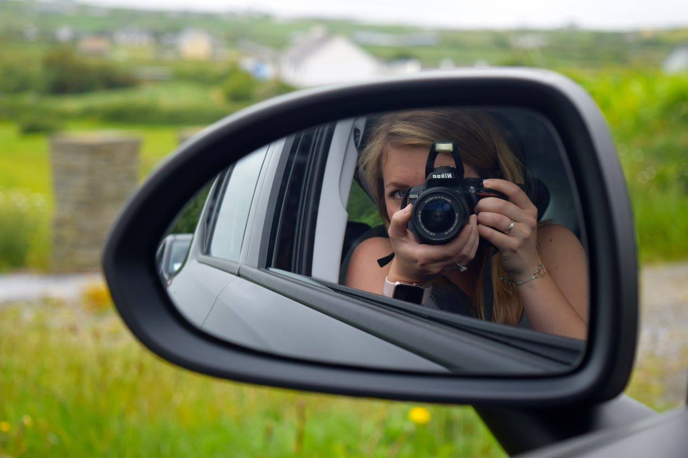
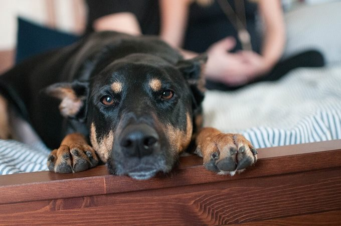
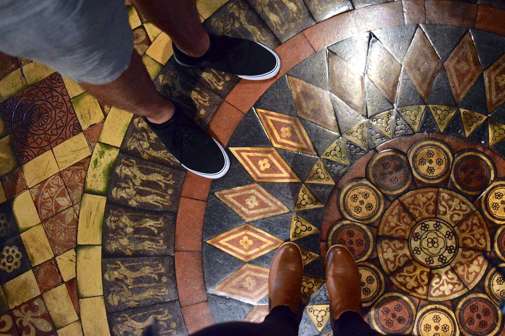
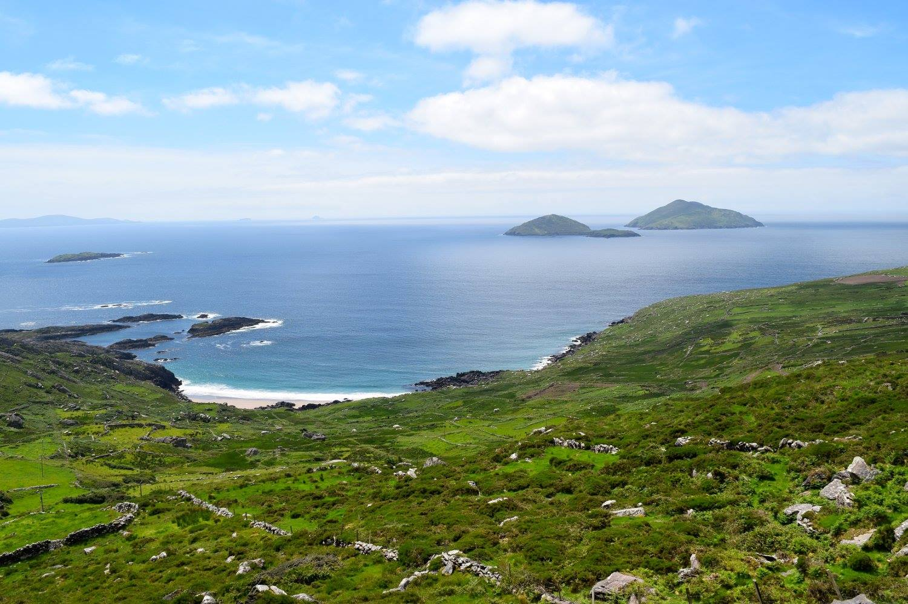

Learning to code
Portfolio /
About me
HTML Projects
Project 1
A matter of semantics
Project 2
A focus on accessibility

Project 3
Navigating the web

Project 4
My coding style

Project 5
Marking my space
